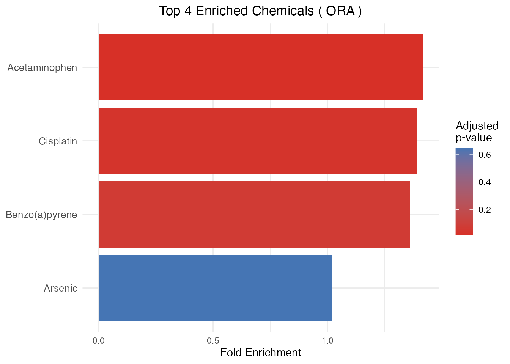
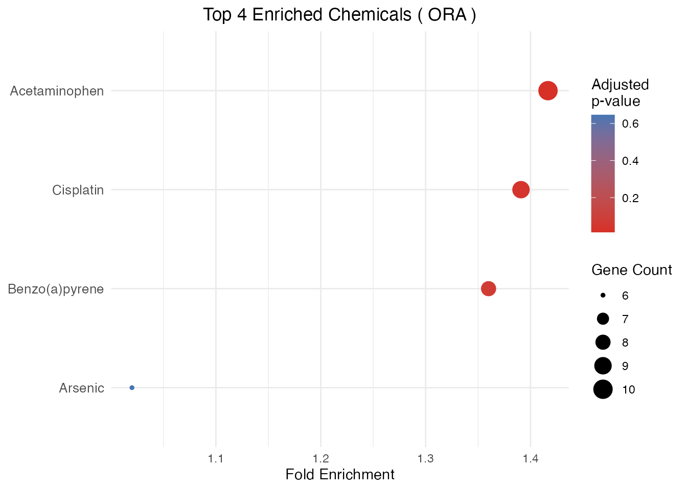
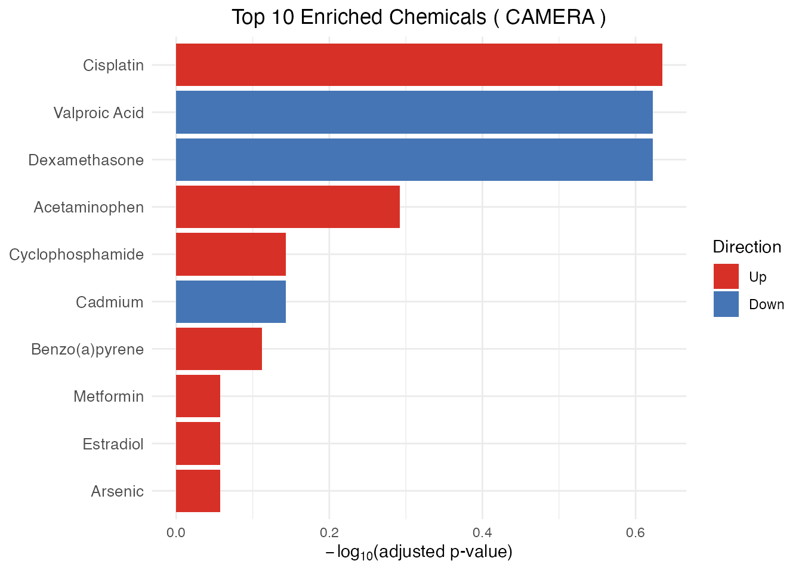
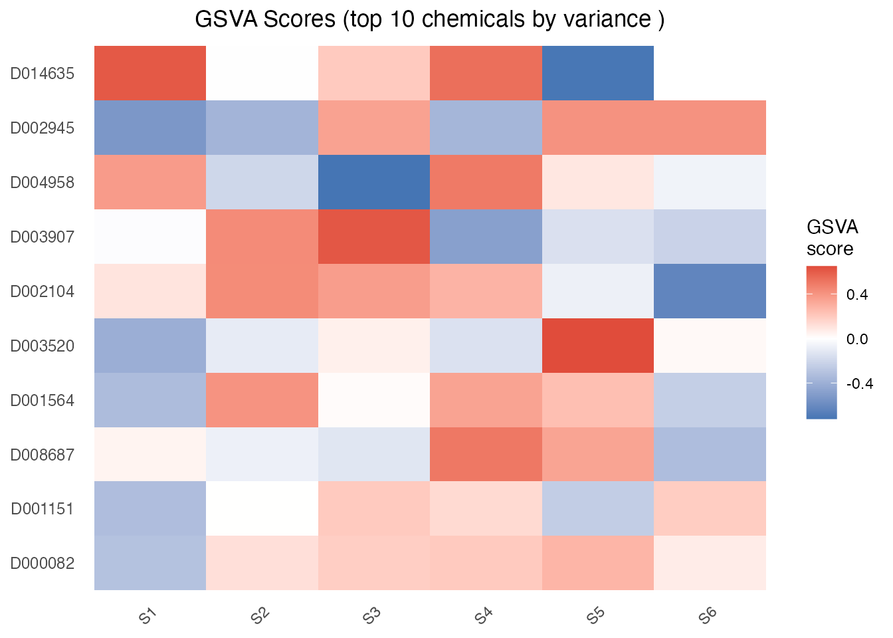

Overview
ctdR identifies chemicals significantly associated with a set of genes using data from the Comparative Toxicogenomics Database (CTD).
Four enrichment methods are supported through a single
enrichment_CTD() interface; the input shape depends on the
method:
-
ORA (Over-Representation Analysis) – gene list +
hypergeometric test. Powered by
clusterProfiler::enricher. -
GSEA (Gene Set Enrichment Analysis) – ranked gene
list + permutation test. Powered by
fgsea::fgsea. -
CAMERA (competitive gene-set test) – expression
matrix + design + contrast. Corrects for inter-gene correlation within
each chemical’s gene set. Powered by
limma::camera. -
GSVA (Gene Set Variation Analysis) – expression
matrix + per-sample scoring. Returns a chemical x sample score matrix.
Powered by
GSVA::gsva.
Data licensing disclaimer
This package does NOT bundle, redistribute, or embed any data from the Comparative Toxicogenomics Database. CTD data are created and maintained by NC State University and are subject to specific licensing terms. Users must download the data directly from https://ctdbase.org and comply with the CTD Terms of Service.
Installation
From Bioconductor
BiocManager::install("ctdR")From GitHub (development version)
# install.packages("devtools")
devtools::install_github("drake69/ctdR")Quick start
The ctdR workflow has three steps:
- Download the CTD data file (once, manually)
- Import the data into ctdR (once)
- Analyse your gene list (as many times as needed)
Step 1 – Download CTD data
Download CTD_chem_gene_ixns.csv.gz from
https://ctdbase.org/reports/CTD_chem_gene_ixns.csv.gz.
Then decompress it:
This produces CTD_chem_gene_ixns.csv (several GB
uncompressed).
Step 2 – Import into ctdR
In production you would run:
library(ctdR)
import_CTD("~/Downloads/CTD_chem_gene_ixns.csv")For this vignette we use a small synthetic dataset bundled with the package:
library(ctdR)
sample_file <- system.file(
"extdata", "CTD_chem_gene_ixns_sample.csv",
package = "ctdR"
)
import_CTD(sample_file)
#> Reading CTD chemical-gene interactions from: /Library/Frameworks/R.framework/Versions/4.6/Resources/library/ctdR/extdata/CTD_chem_gene_ixns_sample.csv
#> Filtered to 86 human interactions
#> Mapping genes for 10 chemicals (this may take a while)...
#>
#> 'select()' returned 1:1 mapping between keys and columns
#> 'select()' returned 1:1 mapping between keys and columns
#> 'select()' returned 1:1 mapping between keys and columns
#> 'select()' returned 1:1 mapping between keys and columns
#> 'select()' returned 1:1 mapping between keys and columns
#> 'select()' returned 1:1 mapping between keys and columns
#> 'select()' returned 1:1 mapping between keys and columns
#> 'select()' returned 1:1 mapping between keys and columns
#> 'select()' returned 1:1 mapping between keys and columns
#> 'select()' returned 1:1 mapping between keys and columns
#> CTD data cached successfully in: ~/Library/Caches/ctdRimport_CTD() performs the following:
- Reads the CSV (skipping the 27 CTD header lines).
- Filters interactions to Homo sapiens only (OrganismID 9606).
- Collects Entrez gene IDs for each chemical.
- Maps Entrez IDs to HGNC gene symbols via
org.Hs.eg.db. - Caches the processed data locally (under
rappdirs::user_cache_dir("ctdR")).
This step takes several minutes with the full CTD file. You only need to run it once – or again when you download a newer CTD release.
Step 3 – Run enrichment analysis
Prepare your gene list
Your input must be a data frame with at least two columns:
| Column | Description |
|---|---|
entrez_ids |
Character or numeric Entrez gene IDs |
| (2nd column) | Numeric value per gene (e.g. p-value) |
The second column is used for ranking in GSEA and is ignored in ORA.
genes <- data.frame(
entrez_ids = c(
"7124", "3569", "7157", "672", "1956",
"4609", "3845", "207", "5290", "3553"
),
pvalue = c(
0.001, 0.003, 0.005, 0.008, 0.01,
0.02, 0.03, 0.04, 0.05, 0.06
)
)Over-Representation Analysis (ORA)
ORA tests whether the overlap between your gene list and each chemical’s known gene targets is significantly larger than expected by chance.
ora_results <- enrichment_CTD(genes, method = "ORA")
#> 'select()' returned 1:1 mapping between keys and columns
#>
head(ora_results)
#> ChemicalID GeneRatio BgRatio RichFactor FoldEnrichment zScore pvalue
#> 1 D000082 10/10 12/17 0.8333333 1.416667 3.0860670 0.003393665
#> 2 D001151 6/10 10/17 0.6000000 1.020000 0.1142857 0.646133278
#> 3 D001564 8/10 10/17 0.8000000 1.360000 2.0571429 0.052241876
#> 4 D002945 9/10 11/17 0.8181818 1.390909 2.5305065 0.017533937
#> padj qvalue geneID
#> 1 0.01357466 0.007144558 TNF/IL6/EGFR/AKT1/TP53/MYC/KRAS/PIK3CA/BRCA1/IL1B
#> 2 0.64613328 0.340070147 TNF/IL6/EGFR/AKT1/TP53/KRAS
#> 3 0.06965583 0.036660965 TNF/EGFR/AKT1/TP53/MYC/KRAS/PIK3CA/IL1B
#> 4 0.03506787 0.018456775 TNF/IL6/EGFR/AKT1/TP53/MYC/KRAS/PIK3CA/BRCA1
#> Count foldEnrichment ChemicalName
#> 1 10 1.416667 Acetaminophen
#> 2 6 1.020000 Arsenic
#> 3 8 1.360000 Benzo(a)pyrene
#> 4 9 1.390909 CisplatinORA output columns:
| Column | Description |
|---|---|
ChemicalID |
CTD chemical identifier |
ChemicalName |
Human-readable chemical name |
GeneRatio |
Proportion of input genes in the set |
BgRatio |
Background ratio |
pvalue |
Raw p-value |
padj |
Adjusted p-value (BH method) |
foldEnrichment |
GeneRatio / BgRatio |
geneID |
Enriched gene symbols |
Count |
Number of overlapping genes |
Gene Set Enrichment Analysis (GSEA)
GSEA uses the full ranked gene list (ranked by the numeric column) to detect chemicals whose targets cluster toward the top or bottom of the ranking.
gsea_results <- enrichment_CTD(genes, method = "GSEA")
#> Warning in prepareStats(stats, scoreType, gseaParam): All values in the stats
#> vector are greater than zero and scoreType is "std", maybe you should switch to
#> scoreType = "pos".
head(gsea_results)
#> ChemicalID pval padj log2err ES NES size
#> 1 D001151 0.32507289 0.4179509 0.08528847 0.6138938 1.216069 6
#> 2 D001564 0.30193906 0.4179509 0.13077714 -0.6329866 -1.174854 8
#> 3 D002104 0.13411079 0.3017493 0.14375899 0.6661635 1.319611 6
#> 4 D002945 0.20100503 0.3618090 0.12384217 1.0000000 1.244519 9
#> 5 D003520 0.42097027 0.4209703 0.07530938 0.5714286 1.090690 3
#> 6 D003907 0.05477308 0.2347418 0.24133998 0.8188439 1.562933 3
#> leadingEdge foldEnrichment ChemicalName Enriched_GENE
#> 1 7124, 35.... 1.531849 Arsenic 1, 2, 3, 5, 7, 8
#> 2 3553, 52.... 1.579491 Benzo(a)pyrene 1, 3, 5, 6, 7, 8, 9, 10
#> 3 7124, 35.... 1.662278 Cadmium 1, 2, 3, 8, 9, 10
#> 4 7124, 35.... 2.495300 Cisplatin 1, 2, 3, 4, 5, 6, 7, 8, 9
#> 5 7157, 67.... 1.425886 Cyclophosphamide 3, 4, 6
#> 6 7124, 3569 2.043261 Dexamethasone 1, 2, 10GSEA output columns:
| Column | Description |
|---|---|
ChemicalID |
CTD chemical identifier |
ChemicalName |
Human-readable chemical name |
pval |
Raw p-value |
padj |
Adjusted p-value |
ES |
Enrichment score |
NES |
Normalized enrichment score |
size |
Size of the gene set |
leadingEdge |
Leading-edge gene subset |
foldEnrichment |
abs(ES) / mean(ES) |
Enriched_GENE |
Comma-separated enriched genes |
Build a synthetic expression matrix for CAMERA and GSVA
CAMERA and GSVA take a gene x sample expression matrix (typically
log2 counts or microarray intensities). For this vignette we build a
small synthetic matrix using the Entrez IDs already loaded by
import_CTD() above:
# Pull the Entrez IDs covered by the bundled sample
cache_dir <- rappdirs::user_cache_dir("ctdR")
e <- new.env(parent = emptyenv())
load(file.path(cache_dir, "ChemicalName_GeneEntrezIds.rda"),
envir = e)
all_ids <- as.character(unique(unlist(
e$ChemicalName_GeneEntrezIds)))
# Synthetic expression matrix: 17 genes x 6 samples
set.seed(2026)
expr <- matrix(
rnorm(length(all_ids) * 6),
nrow = length(all_ids), ncol = 6,
dimnames = list(all_ids, paste0("S", 1:6))
)
dim(expr)
#> [1] 17 6CAMERA (competitive test with inter-gene correlation)
CAMERA tests, for each chemical, whether its target genes show a stronger differential signal than the rest of the transcriptome under a user-supplied design and contrast, while correcting for inter-gene correlation within the gene set.
grp <- factor(rep(c("ctrl", "treat"), each = 3))
design <- model.matrix(~ grp)
camera_results <- enrichment_CTD(
expr,
method = "CAMERA",
design = design,
contrast = 2 # last column of design = treat vs ctrl
)
head(camera_results)
#> ChemicalID ChemicalName NGenes Direction pvalue padj
#> 1 D002945 Cisplatin 11 Up 0.02319375 0.2319375
#> 2 D003907 Dexamethasone 7 Down 0.07151516 0.2383839
#> 3 D014635 Valproic Acid 8 Down 0.05895320 0.2383839
#> 4 D000082 Acetaminophen 12 Up 0.20432247 0.5108062
#> 5 D002104 Cadmium 8 Down 0.39170306 0.7189345
#> 6 D003520 Cyclophosphamide 5 Up 0.43136072 0.7189345CAMERA output columns: ChemicalID,
ChemicalName, NGenes (gene set size after
intersection with rownames), Direction ("Up" /
"Down"), pvalue, padj.
GSVA (per-sample scoring)
GSVA produces a per-sample enrichment score for each chemical, returning a matrix (chemicals in rows, samples in columns) suitable for clustering, association tests against phenotypes, survival analysis, or heatmap visualization.
gsva_scores <- enrichment_CTD(expr, method = "GSVA")
#> ℹ GSVA version 2.6.1
#> ℹ Searching for rows with constant values
#> ℹ Calculating GSVA ranks
#> ℹ kcdf='auto' (default)
#> ℹ GSVA dense (classical) algorithm
#> ℹ Row-wise ECDF estimation with Gaussian kernels
#> ℹ Calculating row ECDFs
#> ℹ Calculating column ranks
#> ℹ GSVA dense (classical) algorithm
#> ℹ Calculating GSVA scores for 10 gene sets
#> ✔ Calculations finished
dim(gsva_scores) # chemicals x samples
#> [1] 10 6
head(gsva_scores, 3)
#> S1 S2 S3 S4 S5 S6
#> D000082 -0.3073171 0.1181818 0.18181818 0.2000000 0.2770833 0.07017544
#> D001564 -0.3370536 0.4025974 0.01567944 0.3458647 0.2408638 -0.24068323
#> D002104 0.1014493 0.4313725 0.36585366 0.2833333 -0.0751634 -0.62903226Tune the underlying GSVA::gsvaParam() through
..., for example to restrict to gene sets of a given
size:
gsva_strict <- enrichment_CTD(
expr, method = "GSVA",
minSize = 5, maxSize = 500
)
#> ℹ GSVA version 2.6.1
#> ℹ Searching for rows with constant values
#> ℹ Calculating GSVA ranks
#> ℹ kcdf='auto' (default)
#> ℹ GSVA dense (classical) algorithm
#> ℹ Row-wise ECDF estimation with Gaussian kernels
#> ℹ Calculating row ECDFs
#> ℹ Calculating column ranks
#> ℹ GSVA dense (classical) algorithm
#> ℹ Calculating GSVA scores for 10 gene sets
#> ✔ Calculations finished
nrow(gsva_strict)
#> [1] 10Visualizing results
plot_CTD() creates publication-ready plots from
enrichment results. It auto-detects the method: bar/dot plots of fold
enrichment for ORA/GSEA, bar/dot plots of -log10(padj)
coloured by direction for CAMERA, and a sample-level heatmap of the
top-variance chemicals for GSVA.
# ORA bar plot of top enriched chemicals
plot_CTD(ora_results, type = "bar")
# ORA dot plot (size = gene count, color = adjusted p-value)
plot_CTD(ora_results, type = "dot", n = 10)
# CAMERA bar plot: x-axis = -log10(padj), fill = Direction
plot_CTD(camera_results, type = "bar")
# GSVA heatmap: top-variance chemicals across samples
plot_CTD(gsva_scores)
Adjusting for multiple testing
By default, enrichment_CTD() uses the Benjamini-Hochberg
("BH") method for p-value adjustment. You can change this
via the pAdjustMethod parameter:
# Bonferroni correction (more conservative)
ora_bonf <- enrichment_CTD(genes, method = "ORA",
pAdjustMethod = "bonferroni")
#> 'select()' returned 1:1 mapping between keys and columns
# No adjustment
ora_raw <- enrichment_CTD(genes, method = "ORA",
pAdjustMethod = "none")
#> 'select()' returned 1:1 mapping between keys and columns
# Compare the adjusted p-value of the top hit
data.frame(
method = c("BH (default)", "bonferroni", "none"),
top_padj = c(min(ora_results$padj),
min(ora_bonf$padj), min(ora_raw$padj))
)
#> method top_padj
#> 1 BH (default) 0.013574661
#> 2 bonferroni 0.013574661
#> 3 none 0.003393665Available methods: "BH" (default),
"bonferroni", "fdr" (alias for BH),
"none".
Choosing among the four methods
| Aspect | ORA | GSEA | CAMERA | GSVA |
|---|---|---|---|---|
| Input | Gene list | Ranked gene list | Expression matrix + design + contrast | Expression matrix |
| Question | Over-represented? | Cluster at extremes? | Stronger signal than rest of transcriptome (correlation-corrected)? | Per-sample chemical score |
| Output | Ranked chemicals (data.frame) | Ranked chemicals (data.frame) | Ranked chemicals (data.frame) | Chemical x sample score matrix |
| Best for | DEG lists | Exploratory, ranked | Multi-sample DE experiments, co-regulated gene sets | Patient stratification, downstream tests, heatmaps |
Use ORA when you have a well-defined gene list above a significance threshold; GSEA to leverage the full ranking without a cutoff; CAMERA when you have a proper multi-sample design and want to control the inflated false-positive rate that ORA/GSEA exhibit on strongly co-regulated gene sets; GSVA when you want a per-sample score to feed into downstream analyses (clustering, survival, correlation with phenotypes).
Updating the CTD data
CTD releases updated data periodically. To update:
- Download the latest
CTD_chem_gene_ixns.csv.gzfrom https://ctdbase.org/reports/CTD_chem_gene_ixns.csv.gz. - Decompress and re-run
import_CTD()– existing cache files are overwritten.
import_CTD("~/Downloads/CTD_chem_gene_ixns.csv")Session info
sessionInfo()
#> R version 4.6.0 (2026-04-24)
#> Platform: aarch64-apple-darwin23
#> Running under: macOS Tahoe 26.3.1
#>
#> Matrix products: default
#> BLAS: /Library/Frameworks/R.framework/Versions/4.6/Resources/lib/libRblas.0.dylib
#> LAPACK: /Library/Frameworks/R.framework/Versions/4.6/Resources/lib/libRlapack.dylib; LAPACK version 3.12.1
#>
#> locale:
#> [1] en_US.UTF-8/en_US.UTF-8/en_US.UTF-8/C/en_US.UTF-8/en_US.UTF-8
#>
#> time zone: Europe/Rome
#> tzcode source: internal
#>
#> attached base packages:
#> [1] stats graphics grDevices utils datasets methods base
#>
#> other attached packages:
#> [1] ctdR_0.99.2 BiocStyle_2.40.0
#>
#> loaded via a namespace (and not attached):
#> [1] RColorBrewer_1.1-3 jsonlite_2.0.0
#> [3] tidydr_0.0.6 magrittr_2.0.5
#> [5] magick_2.9.1 ggtangle_0.1.2
#> [7] farver_2.1.2 rmarkdown_2.31
#> [9] fs_2.1.0 ragg_1.5.2
#> [11] vctrs_0.7.3 DelayedMatrixStats_1.34.0
#> [13] memoise_2.0.1 ggtree_4.2.0
#> [15] S4Arrays_1.12.0 htmltools_0.5.9
#> [17] Rhdf5lib_2.0.0 rhdf5_2.56.0
#> [19] SparseArray_1.12.2 gridGraphics_0.5-1
#> [21] sass_0.4.10 bslib_0.10.0
#> [23] htmlwidgets_1.6.4 desc_1.4.3
#> [25] plyr_1.8.9 httr2_1.2.2
#> [27] cachem_1.1.0 igraph_2.3.1
#> [29] lifecycle_1.0.5 pkgconfig_2.0.3
#> [31] rsvd_1.0.5 Matrix_1.7-5
#> [33] R6_2.6.1 fastmap_1.2.0
#> [35] gson_0.1.0 MatrixGenerics_1.24.0
#> [37] digest_0.6.39 aplot_0.2.9
#> [39] enrichplot_1.32.0 ggnewscale_0.5.2
#> [41] patchwork_1.3.2 AnnotationDbi_1.74.0
#> [43] S4Vectors_0.50.0 aisdk_1.1.0
#> [45] irlba_2.3.7 GenomicRanges_1.64.0
#> [47] textshaping_1.0.5 RSQLite_3.52.0
#> [49] beachmat_2.28.0 org.Hs.eg.db_3.23.1
#> [51] labeling_0.4.3 abind_1.4-8
#> [53] httr_1.4.8 polyclip_1.10-7
#> [55] compiler_4.6.0 bit64_4.8.0
#> [57] fontquiver_0.2.1 withr_3.0.2
#> [59] S7_0.2.2 BiocParallel_1.46.0
#> [61] DBI_1.3.0 HDF5Array_1.40.0
#> [63] ggforce_0.5.0 MASS_7.3-65
#> [65] rappdirs_0.3.4 DelayedArray_0.38.1
#> [67] rjson_0.2.23 tools_4.6.0
#> [69] otel_0.2.0 ape_5.8-1
#> [71] scatterpie_0.2.6 glue_1.8.1
#> [73] h5mread_1.4.0 callr_3.7.6
#> [75] rhdf5filters_1.24.0 nlme_3.1-169
#> [77] GOSemSim_2.38.0 grid_4.6.0
#> [79] cluster_2.1.8.2 reshape2_1.4.5
#> [81] memuse_4.2-3 fgsea_1.38.0
#> [83] generics_0.1.4 gtable_0.3.6
#> [85] tzdb_0.5.0 tidyr_1.3.2
#> [87] data.table_1.18.4 hms_1.1.4
#> [89] ScaledMatrix_1.20.0 BiocSingular_1.28.0
#> [91] XVector_0.52.0 BiocGenerics_0.58.0
#> [93] ggrepel_0.9.8 pillar_1.11.1
#> [95] stringr_1.6.0 yulab.utils_0.2.4
#> [97] vroom_1.7.1 GSVA_2.6.1
#> [99] limma_3.68.2 splines_4.6.0
#> [101] dplyr_1.2.1 tweenr_2.0.3
#> [103] treeio_1.36.1 lattice_0.22-9
#> [105] bit_4.6.0 annotate_1.90.0
#> [107] tidyselect_1.2.1 SingleCellExperiment_1.34.0
#> [109] fontLiberation_0.1.0 GO.db_3.23.1
#> [111] Biostrings_2.80.0 knitr_1.51
#> [113] fontBitstreamVera_0.1.1 bookdown_0.46
#> [115] IRanges_2.46.0 Seqinfo_1.2.0
#> [117] SummarizedExperiment_1.42.0 stats4_4.6.0
#> [119] xfun_0.57 Biobase_2.72.0
#> [121] statmod_1.5.1 matrixStats_1.5.0
#> [123] stringi_1.8.7 lazyeval_0.2.3
#> [125] ggfun_0.2.0 yaml_2.3.12
#> [127] evaluate_1.0.5 codetools_0.2-20
#> [129] gdtools_0.5.0 tibble_3.3.1
#> [131] qvalue_2.44.0 graph_1.90.0
#> [133] BiocManager_1.30.27 ggplotify_0.1.3
#> [135] cli_3.6.6 xtable_1.8-8
#> [137] systemfonts_1.3.2 processx_3.9.0
#> [139] jquerylib_0.1.4 Rcpp_1.1.1-1.1
#> [141] png_0.1-9 XML_3.99-0.23
#> [143] parallel_4.6.0 pkgdown_2.2.0
#> [145] ggplot2_4.0.3 readr_2.2.0
#> [147] blob_1.3.0 clusterProfiler_4.20.0
#> [149] DOSE_4.6.0 sparseMatrixStats_1.24.0
#> [151] SpatialExperiment_1.22.0 GSEABase_1.74.0
#> [153] tidytree_0.4.7 ggiraph_0.9.6
#> [155] enrichit_0.1.4 scales_1.4.0
#> [157] purrr_1.2.2 crayon_1.5.3
#> [159] rlang_1.2.0 cowplot_1.2.0
#> [161] fastmatch_1.1-8 KEGGREST_1.52.0